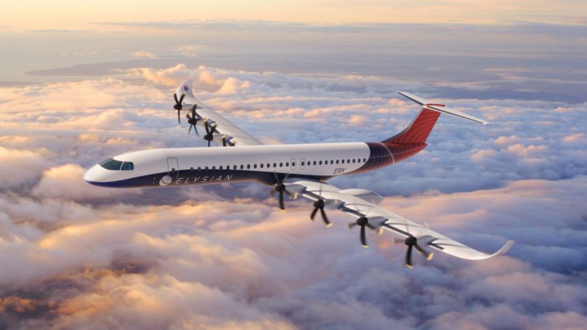

AV045
BOG
→
SSD
En vivo
0%
completado
Velocidad
0
km/h
Altitud
0
m
0
ft
Temp. exterior
--
°C
Tiempo restante
--
Origen
--:--:--
Destino
--:--:--
Recorrido
Restante
Arrastra para girar · rueda para acercar
Destino
CV
Correr para Vivir
0:00
Capítulos
Reiniciar el viaje
Atajos:
←
Volver ·
→
Siguiente ·
Espacio
Play/Pausa ·
M
Silencio